1 Νόμος των ημιτόνων - Νόμος των συνημιτόνων
1.1 Νόμος των Ημιτόνων
Θεωρία: Σε κάθε τρίγωνο \(ABΓ\) με πλευρές \(α, β, γ\) και αντίστοιχες γωνίες \(A, B, Γ\), ισχύει η σχέση: \[\frac{α}{ημ A} = \frac{β}{ημΒ} = \frac{γ}{ημΓ} = 2R\] όπου \(R\) είναι η ακτίνα του περιγεγραμμένου κύκλου του τριγώνου.
Απόδειξη:
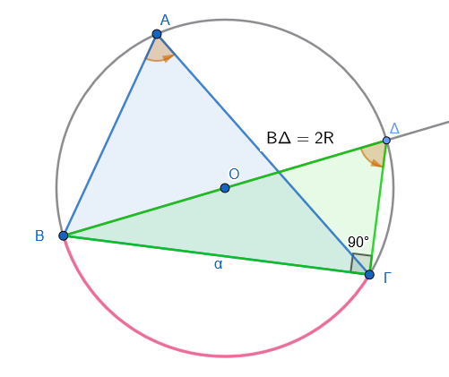
- Θεωρούμε τον περιγεγραμμένο κύκλο του τριγώνου \(ABΓ\) με κέντρο \(O\) και ακτίνα \(R\).
- Φέρουμε τη διάμετρο \(BΔ = 2R\). Τότε το τρίγωνο \(BΔΓ\) είναι ορθογώνιο στη γωνία \(Γ\) (εγγεγραμμένη σε ημικύκλιο).
- Στο ορθογώνιο τρίγωνο \(BΔΓ\), η γωνία \(Δ\) είναι ίση με τη γωνία \(A\) (βαίνουν στο ίδιο τόξο \(BΓ\)).
- Έχουμε \(ημΔ = ημΑ = \dfrac{α}{2R}\), άρα \(\dfrac{α}{ημ A} = 2R\).
- Με όμοιο τρόπο αποδεικνύονται οι σχέσεις για τις άλλες πλευρές.
Παράδειγμα:
Μπορούμε να χρησιμοποιήσουμε την σχέση αναλογίας των ημιτόνων για υπολογισμούς στοιχείων σε τρίγωνο.
Σε τρίγωνο \(ABΓ\) δίνονται \(A = 30^\circ, \ \ \ α = 5\) και \(B = 45^\circ\). Να βρεθεί η πλευρά \(β\).
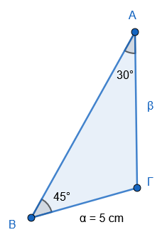
Λύση:
\(\dfrac{5}{ημ 30^\circ} = \dfrac{β}{ημ 45^\circ} \Rightarrow \dfrac{5}{1/2} = \dfrac{β}{\sqrt{2}/2} \Rightarrow 10 = \dfrac{2\beta}{\sqrt{2}} \Rightarrow \beta = 5\sqrt{2}\).
1.2 Νόμος των Συνημιτόνων
Θεωρία: Σε κάθε τρίγωνο \(AB\Gamma\) ισχύουν οι σχέσεις:
- \(α^2 = β^2 + γ^2 - 2βγ συν A\)
- \(β^2 = α^2 + γ^2 - 2αγ συν B\)
- \(γ^2 = α^2 + β^2 - 2αβ συνΓ\)
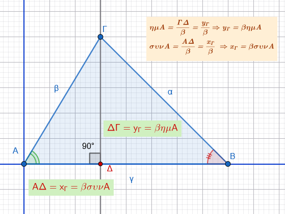
Απόδειξη:
Τοποθετούμε το τρίγωνο σε καρτεσιανό σύστημα συντεταγμένων με την κορυφή \(A\) στο \((0,0)\) και την πλευρά \(γ\) πάνω στον άξονα \(x\).
Οι συντεταγμένες των κορυφών είναι: \(A(0,0)\), \(B(γ, 0)\), \(Γ(β συν A, β ημ A)\).
Χρησιμοποιούμε τον τύπο της απόστασης για την πλευρά \(α\) (απόσταση \(BΓ\)):
\(α^2 = (γ-β συν A )^2 + (β ημ A - 0)^2\)
- \(α^2 = γ^2+β^2 συν^2 A - 2βγ συν A + β^2 ημ^2 A \Rightarrow\)
\(α^2 = γ^2+β^2 (συν^2 A+ημ^2Α) - 2βγ συν A\)
- Επειδή \(ημ^2 A + συν^2 A = 1\), προκύπτει: \(α^2 = β^2 + γ^2 - 2βγ συν A\).
Παράδειγμα:
Μπορούμε να χρησιμοποιήσουμε τον νόμο των συνημιτόνων για υπολογισμούς στοιχείων σε τρίγωνο.
Σε τρίγωνο \(ABΓ\) είναι \(β = 3, γ = 5\) και \(A = 60^\circ\).
Να βρεθεί η πλευρά \(\alpha\).
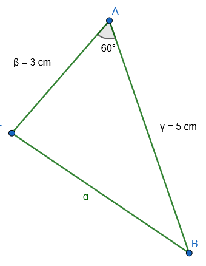
Λύση:
\(α^2 = 3^2 + 5^2 - 2(3)(5) συν 60^\circ \Rightarrow\)
\(α^2 = 9 + 25 - 30(0.5) \Rightarrow\)
\(α^2 = 34 - 15 = 19 \Rightarrow α = \sqrt{19}\).
1.3 Ασκήσεις
Στο παρακάτω τρίγωνο, όπου οι γωνίες είναι \(64^\circ\) και \(70^\circ\) και οι απέναντι πλευρές είναι \(α\) και \(β\) αντίστοιχα, να γράψετε τον νόμο των ημιτόνων.
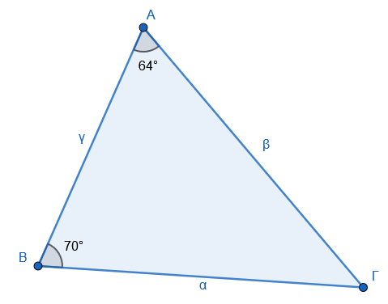
Σε ένα τρίγωνο \(ABΓ\) με σημείο \(Δ\) επί της πλευράς \(BΓ\):
α) Να γράψετε τον νόμο των ημιτόνων στο τρίγωνο \(ABΔ\), αν η γωνία \(\widehat{ΒΑΔ} = 30^\circ\) .
β) Να γράψετε τον νόμο των ημιτόνων στο τρίγωνο \(AΔΓ\), αν η γωνία \(\widehat{ΓΑΔ} = 45^\circ\) και η γωνία \(\widehat{ΓΔΑ} = 88^\circ\).
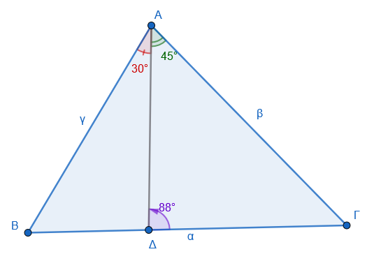
- Να χαρακτηρίσετε τις παρακάτω ισότητες με (\(\Sigma\)), αν είναι σωστές ή με (\(\Lambda\)), αν είναι λανθασμένες:
κάντε τα σχήματα σύμφωνα με τα δεδομένα.
α) Σε κάθε τρίγωνο \(ABΓ\) ισχύει \(α \cdot ημΓ = γ \cdot ημΑ\)……………………………………………………..\([\ \quad \quad \quad ]\).
β) Αν σε τρίγωνο \(ABΓ\) είναι \(\hat{B} = 40^\circ, \hat{Γ} = 80^\circ\), τότε \(\dfrac{β}{ημ 40^\circ} = \dfrac{α}{ημ 60^\circ}\) ……………………..\([\ \quad \quad \quad ]\).
γ) Σε κάθε τρίγωνο \(ABΓ\) ισχύει \(2βγ συν A = β^2 + γ^2 - α^2\) …………………………………………\([\ \quad \quad \quad ]\).
δ) Αν σε τρίγωνο \(ABΓ\) είναι \(\hat{A} = 50^\circ\), τότε ισχύει \(α^2 = β^2 + γ^2 - 2 \ β \ γ \ συν 50^\circ\) ……..\([\ \quad \quad \quad ]\).
ε) Αν σε τρίγωνο \(ABΓ\) είναι \(\hat{A} = 120^\circ\), τότε ισχύει \(α^2 = β^2 + γ^2 + βγ\) …………………….\([\ \quad \quad \quad ]\).
- Να συμπληρώσετε τις παρακάτω ισότητες σύμφωνα με το νόμο των συνημιτόνων για ένα τρίγωνο με πλευρές \(a, β, γ\) και γωνίες \(\hat{A} = 50^\circ\) απέναντι από την πλευρά \(α\) και \(\hat Γ=70^ο\) απέναντι από την πλευρά \(γ\):
κάντε τα σχήματα σύμφωνα με τα δεδομένα.
\(α^2 = \dots\)
\(β^2 = \dots\)
\(γ^2 = \dots\)
- Να συμπληρώσετε τις παρακάτω προτάσεις:
κάντε τα σχήματα σύμφωνα με τα δεδομένα.
α) Η γωνία \(\hat B\) σε τρίγωνο \(ΑΒΓ\) με πλευρές \(AB=7, BΓ=8 \text{ και } ΑΓ=9\) υπολογίζεται με τον νόμο των ……………… από την ισότητα …………………………
β) Η πλευρά \(ΑΓ\) σε τρίγωνο \(ΑΒΓ\) με πλευρές \(ΑΒ=6, ΒΓ=9\) και περιεχόμενη γωνία \(45^\circ\) υπολογίζεται με τον νόμο των …………… από την ισότητα ………………
γ) Η γωνία \(\hat Γ\) σε τρίγωνο \(ΑΒΓ\) με πλευρές \(ΑΒ=5, ΑΓ=5, ΒΓ=8\) υπολογίζεται με τον νόμο των ……………. από την ισότητα …. …………
δ) Η πλευρά \(AB\) σε τρίγωνο ΑΒΓ με γωνίες \(\hat A=50^\circ, \hat Γ=80^\circ\) και πλευρά ΑΓ=10 cm υπολογίζεται με τον νόμο των …………………. από την ισότητα ……………..
- Να υπολογίσετε το \(x\) στα παρακάτω τρίγωνα:
κάντε τα σχήματα σύμφωνα με τα δεδομένα.
α) Τρίγωνο με πλευρές \(5\) και \(x\) και απέναντι γωνίες \(60^\circ\) και \(45^\circ\) αντίστοιχα.
β) Τρίγωνο με πλευρά \(20\) απέναντι από γωνία \(120^\circ\), και πλευρά \(x\) απέναντι από γωνία \(30^\circ\).
γ) Τρίγωνο με πλευρές \(10\) και \(x\) και απέναντι γωνίες \(75^\circ\) και \(30^\circ\) αντίστοιχα.
- Να υπολογίσετε το \(x\) στα παρακάτω τρίγωνα (εφαρμόζοντας τον νόμο των συνημιτόνων):
κάντε τα σχήματα σύμφωνα με τα δεδομένα
α) Τρίγωνο με πλευρές \(6\) και \(9\) και περιεχόμενη γωνία \(60^\circ\).
β) Τρίγωνο με πλευρές \(4\sqrt{2}\) και \(5\) και περιεχόμενη γωνία \(135^\circ\).
γ) Τρίγωνο με πλευρές \(7\) και \(8\) και περιεχόμενη γωνία \(45^\circ\).
- Να υπολογίσετε τις υπόλοιπες γωνίες του τριγώνου \(ABΓ\), όταν:
α) \(α = 3\), \(β = 3\sqrt{3}\) και \(\hat{A} = 30^\circ\).
β) \(β = \sqrt{2}\), \(γ = 2\) και \(\hat{Γ} = 45^\circ\).
Αν σε τρίγωνο \(ABΓ\) είναι \(\hat{A} = 45^\circ\), \(α = 2\sqrt{2}\) και \(β = 2\), τότε να αποδείξετε ότι το τρίγωνο είναι ορθογώνιο.
Να υπολογίσετε το μήκος της διαδρομής \(x=ΔΓ\) ενός τελεφερίκ που ξεκινά από την ΑΡΧΗ ΤΕΛΕΦΕΡΙΚ , σε σημείο που απέχει \(ΔΕ=400\) m από τη βάση του βουνού, αν η γωνία της κορυφής είναι \(ΔΓΕ=10^\circ\) και η γωνία της κλίσης της διαδρομής ως προς το οριζόντιο έδαφος είναι \(ΕΔΓ=30^\circ\).
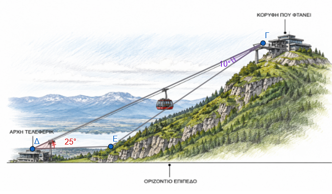
Ένας μαθητής λέει ότι βρήκε ένα τρίγωνο \(ABΓ\) με \(α = 5\), \(β = 15\) και \(\hat{A} = 120^\circ\). Γιατί ο καθηγητής του είπε ότι είναι αδύνατο να υπάρχει τέτοιο τρίγωνο;
Δύο δυνάμεις \(F_1, F_2\) έχουν συνισταμένη \(F = 20\) N. Η δύναμη \(F_1\) σχηματίζει με τη συνισταμένη \(F\) γωνία \(30^\circ\), ενώ η δύναμη \(F_2\) σχηματίζει με τη συνισταμένη \(F\) γωνία \(45^\circ\).
Να υπολογίσετε τα μέτρα των δυνάμεων \(F_1\) και \(F_2\).
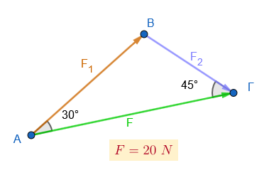
Ένας τοπογράφος θέλει να μετρήσει το ύψος ενός πύργου. Από το σημείο \(A\) μετράει τη γωνία ανύψωσης \(40^\circ\). Μετακινείται κατά \(20\) m πλησιέστερα προς τον πύργο (σημείο \(B\)) και μετράει γωνία \(55^\circ\). Αν το γωνιόμετρο βρίσκεται σε ύψος \(1.5\) m από το έδαφος, ποιο είναι το ύψος του πύργου;
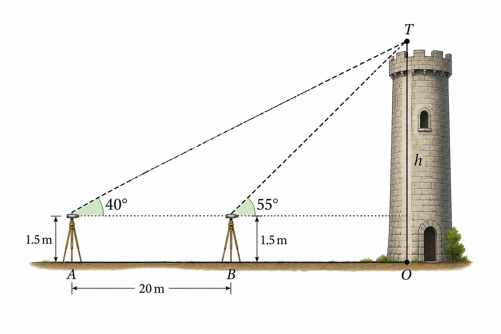
Να υπολογίσετε τά \(λ\) και \(θ\) στις παρακάτω περιπτώσεις :
α) Τρίγωνο με πλευρές \(2\sqrt{3}, 4\) και γωνία \(30^\circ\) μεταξύ τους.
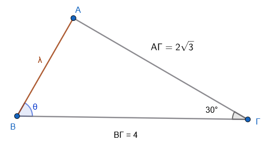
β) Τρίγωνο με πλευρές \(5, 6\) και \(8\).
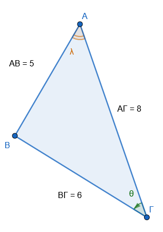
γ) Τρίγωνο με πλευρές \(4, 7\) και γωνία \(120^\circ\) μεταξύ τους.
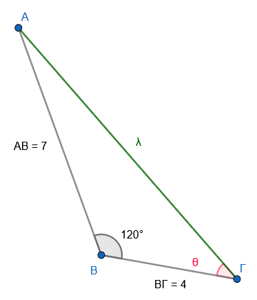
δ) Τρίγωνο με πλευρές \(10, 11\) και \(15\).
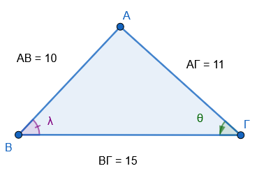
- Να υπολογίσετε τις ίσες πλευρές \(\beta, \gamma\) ισοσκελούς τριγώνου \(AB\Gamma\), αν η γωνία \(\hat{A} = 90^\circ\) και η βάση \(\alpha = 6\sqrt{2}\).
κάντε το σχήμα σύμφωνα με τα δεδομένα
- Σε κύκλο με ακτίνα \(R = 8\) cm, η χορδή \(AB\) αντιστοιχεί σε επίκεντρη γωνία \(60^\circ\). Να υπολογίσετε το μήκος της χορδής \(AB\).
κάντε το σχήμα σύμφωνα με τα δεδομένα
- Να υπολογίσετε τις διαγωνίους παραλληλογράμμου \(ABΓΔ\) με πλευρές \(AB = 5\), \(BΓ = 4\) και γωνία \(\hat{A} = 60^\circ\).
κάντε το σχήμα σύμφωνα με τα δεδομένα
Μια εταιρεία θέλει να κατασκευάσει σήραγγα μεταξύ των σημείων \(A\) και \(B\). Ένας μηχανικός μετράει από το σημείο \(M\) την απόσταση \(MA = 200\) m, \(MB = 150\) m και τη γωνία \(\widehat{AMB} = 60^\circ\). Να υπολογίσετε το μήκος της σήραγγας \(AB\).
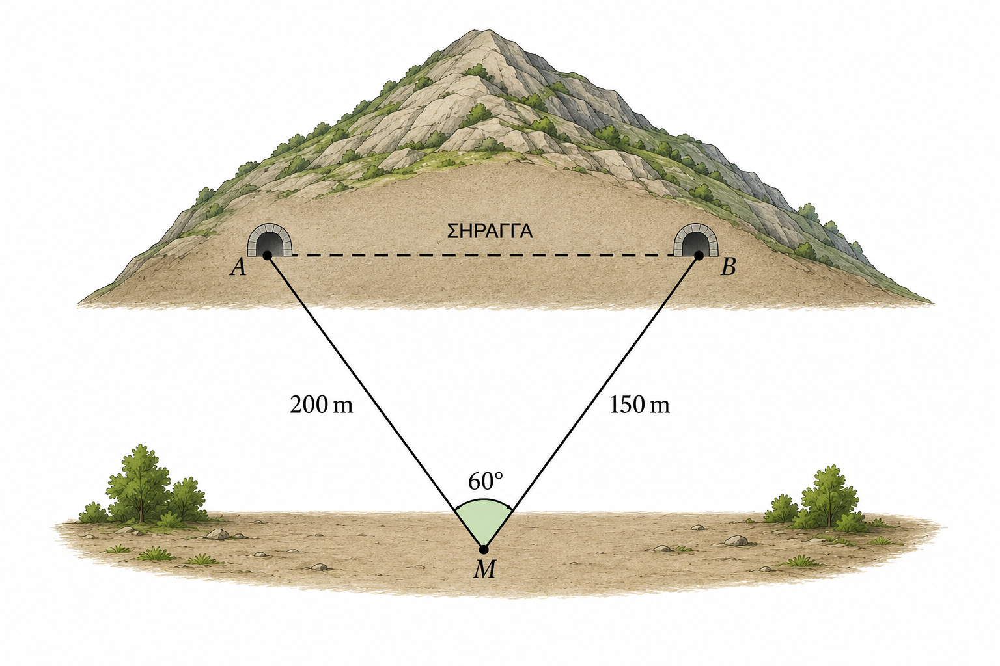
Ένας τεχνικός στηρίζει μια μεταλλική κατασκευή με δύο βέργες \(AB = 0.50\) m και \(BΓ = 1.20\) m. Αν η γωνία μεταξύ τους είναι \(120^\circ\), να υπολογίσετε το μήκος της τρίτης πλευράς \(AΓ\) που απαιτείται για να κλείσει το τρίγωνο.
κάντε το σχήμα σύμφωνα με τα δεδομένα
- Σε ένα τρίγωνο \(ΑΒΓ\), αν μια πλευρά είναι \(6\) και η απέναντι γωνία της \(50^\circ\), υπολογίστε την πλευρά \(x\) που βρίσκεται απέναντι από γωνία \(45^\circ\).
κάντε το σχήμα σύμφωνα με τα δεδομένα
- Σε τρίγωνο με πλευρές \(10\) και \(5\), αν η γωνία απέναντι από την πλευρά \(5\) είναι \(30^\circ\), βρείτε τη γωνία \(x\) που βρίσκεται απέναντι από την πλευρά \(10\).
κάντε το σχήμα σύμφωνα με τα δεδομένα
- Δίνονται οι πλευρές \(α = 5\), \(β= \sqrt{3}\) και η γωνία \(\hat{B} = 50^\circ\). Υπολογίστε τις υπόλοιπες γωνίες του τριγώνου.
κάντε το σχήμα σύμφωνα με τα δεδομένα
- Σε τρίγωνο \(ΑΒΓ\) δίνονται \(β = 7\) cm, \(γ = 5\) cm και η περιεχόμενη γωνία \(\hat{A} = 60^\circ\). Βρείτε την πλευρά \(α\).
κάντε το σχήμα σύμφωνα με τα δεδομένα
- Σε τρίγωνο \(ΑΒΓ\) οι πλευρές είναι \(α = \sqrt{13}\), \(β = 4\) και \(γ = 3\). Υπολογίστε τη γωνία \(\hat{A}\).
κάντε το σχήμα σύμφωνα με τα δεδομένα
Αν σε ένα τρίγωνο ισχύει η σχέση \(α^2 = β^2 + γ^2 - βγ\sqrt{3}\), βρείτε το μέτρο της γωνίας \(\hat{A}\).
Σε τρίγωνο \(ΑΒΓ\) δίνονται \(α = 3\), \(β = 5\) και η γωνία \(\hat{Γ} = 135^\circ\). Υπολογίστε την πλευρά \(γ\).
κάντε το σχήμα σύμφωνα με τα δεδομένα
Σε τρίγωνο \(ΑΒΓ\) είναι \(α = 2γ\) και \(β = γ\sqrt{7}\). Υπολογίστε τη γωνία \(\hat{B}\).
Βρείτε την πλευρά \(x\) ενός τριγώνου όταν οι άλλες δύο πλευρές είναι \(3\) και \(4\) και η περιεχόμενη γωνία τους είναι \(60^\circ\).
\[\bbox[yellow, 5px]{\color{blue}\Large\text{---}}\]
ΚΑΛΗ ΜΕΛΕΤΗ!